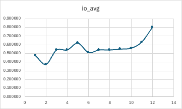
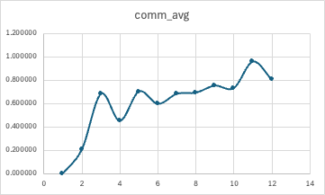
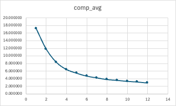
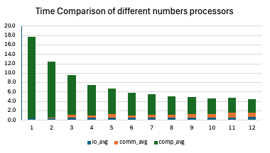
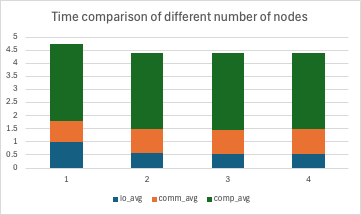

這次作業，我的整體流程為
N, input path, output path
MPI_Bcast 會廣播Ｎ到其他所有rankbcast_str -> 先廣播長度，在廣播內容(input path, output path)到所有rankMPI_Comm_rank(comm, &rank) 來取得rank，用於後面判斷自己是不是rootbuf (len)s.assign(buf.data(), buf.data() + len); 來重建出自己的string sstatic void bcast_str(string& s, int root, MPI_Comm comm) {
int rank;
MPI_Comm_rank(comm, &rank);
int len = (rank == root) ? s.size() : 0;
MPI_Bcast(&len, 1, MPI_INT, root, comm);
vector<char> buf(len);
if (rank == root && len) {
memcpy(buf.data(), s.data(), len);
}
if (len) MPI_Bcast(buf.data(), len, MPI_CHAR, root, comm);
if (rank != root) {
s.assign(buf.data(), buf.data() + len);
}
}
rem 就可以使Ｎ就算不整除也可以正確平分元素給所有的rankvector<int> count : Number of elements each rank need to readvector<int> displacement : 快速計算每個rank要從原始input的哪個index開始讀資料static void separate_interval(ull N, int P, vector<int>& counts, vector<int>& displs) {
counts.resize(P);
displs.resize(P);
ull base = N / P;
ull rem = N % P;
long long offset = 0;
for (int r = 0; r < P; r++) {
// c : # of elements `r`th rank need to read
ull c = base + (r < rem ? 1 : 0);
counts[r] = c;
// displacement from original array (where to start reading data)
displs[r] = offset;
offset += (long long)c;
}
}
這段開始是被寫在 int main() 裡面
N, input/output path 之後
bcast_str把input/outpu path讓所有rank知道separate_interval 計算每一個rank所需要讀的數量以及要從哪一個index開始讀 MPI_Init(&argc, &argv);
int rank, size;
MPI_Comm_rank(MPI_COMM_WORLD, &rank);
MPI_Comm_size(MPI_COMM_WORLD, &size);
ull N = 0;
string input_path, output_path;
if (rank == 0) {
N = strtoull(argv[1], nullptr, 10);
input_path = argv[2];
output_path = argv[3];
}
MPI_Bcast(&N, 1, MPI_UNSIGNED_LONG_LONG, 0, MPI_COMM_WORLD);
bcast_str(input_path, 0, MPI_COMM_WORLD);
bcast_str(output_path, 0, MPI_COMM_WORLD);
vector<int> counts, displs;
separate_interval(N, size, counts, displs);
MPI_File_open 來打開檔案MPI_File_read_at_all 來讀取檔案內容
MPI_File_read_at_all(
/*fh*/ fin, --> MPI_File打開的檔案
/*offset*/ byte_offset, --> 檔案位移
/*buf*/ local_n ? local.data() : NULL, --> 要讀到哪裡
/*count*/ local_n, --> 要讀幾個元素
/*datatype*/ MPI_FLOAT, --> 每個元素的type
/*status*/ &st
);
int local_n = counts[rank];
long long local_off_elems = displs[rank];
MPI_File fin, fout;
vector<float> local(local_n);
// ===== File in ======
MPI_File_open(MPI_COMM_WORLD, input_path.c_str(), MPI_MODE_RDONLY, MPI_INFO_NULL, &fin);
MPI_Status st;
MPI_Offset byte_offset = (MPI_Offset)local_off_elems * sizeof(float);
MPI_File_read_at_all(fin, byte_offset, local_n ? local.data() : nullptr, local_n, MPI_FLOAT, &st);
MPI_File_close(&fin);
sort() in C++ std library
while(true)進入while 迴圈之後每一輪都跑兩個階段
for (int state = 0; state < 2; state++) {
int neighbor = ((rank % 2) == state) ? (rank + 1) : (rank - 1);
if (neighbor < 0 || neighbor >= size) {
continue;
}
...
}
接下來就是做"鄰居互換"這個動作
recvbuf 用來存放鄰居傳過來的資料MPI_Sendrecv(
/*sendbuf*/ local_n ? local.data() : nullptr, -->要送出的資料
/*sendcount*/ local_n, -->要送出的資料有多大
/*sendtype*/ MPI_FLOAT, -->資料type
/*dest*/ neighbor, -->送給哪個rank
/*sendtag*/ 0,
/*recvbuf*/ neighbor_n ? recvbuf.data() : nullptr, -->把資料放進recvbuf
/*recvcount*/ neighbor_n, -->鄰居資料有多大
/*recvtype*/ MPI_FLOAT, -->資料type
/*source*/ neighbor, -->從哪裡送來
/*recvtag*/ 0,
/*comm*/ MPI_COMM_WORLD,
/*status*/ MPI_STATUS_IGNORE
);
vector<float> recvbuf;
int neighbor_n = counts[neighbor];
recvbuf.resize(neighbor_n);
MPI_Sendrecv(local_n ? local.data() : nullptr, local_n, MPI_FLOAT, neighbor, 0,
neighbor_n ? recvbuf.data() : nullptr, neighbor_n, MPI_FLOAT, neighbor, 0,
MPI_COMM_WORLD, MPI_STATUS_IGNORE);
當每個rank都有自己跟neighbor的資料之後，就可以排序之後看看自己是該保留比較大的那一半還是比較小的那一半
low_half(), high_half()
low_half : 合併Ａ, B，取出最小的A.size個元素並存到 vector<int> out裡面high_half : 合併Ａ, B，取出最大的B.size個元素並存到 vector<int> out裡面
A != out 表示這次compare-split是否有改變local的資料static bool low_half(const vector<float>& A, const vector<float>& B, vector<float>& out) {
int needed = A.size();
out.resize(needed);
int i = 0, j = 0, k = 0;
while (k < needed) {
float v;
if (j >= B.size() || (i < A.size() && A[i] <= B[j])) v = A[i++];
else v = B[j++];
out[k++] = v;
}
return A != out;
}
static bool high_half(const vector<float>& A, const vector<float>& B, vector<float>& out) {
int needed = A.size();
out.resize(needed);
int i = A.size() - 1;
int j = B.size() - 1;
int k = needed - 1;
while (k >= 0) {
float v;
if (j < 0 || (i >= 0 && A[i] >= B[j])) v = A[i--];
else v = B[j--];
out[k--] = v;
}
return A != out;
}
使用上面所寫的兩個helper function來把排序好的資料分給兩個rank，並記錄此次iteration是否有發生交換
bool changed = false;
if (rank < neighbor) {
changed = low_half(local, recvbuf, nextbuf);
}
else {
changed = high_half(local, recvbuf, nextbuf);
}
if (changed) {
local.swap(nextbuf);
global_change = true;
}
int flag = global_change ? 1 : 0;
int allflag = 0;
MPI_Allreduce(&flag, &allflag, 1, MPI_INT, MPI_LOR, MPI_COMM_WORLD);
if (!allflag) break;
MPI_Allreduce(
/*sendbuf*/ &flag, -->本地的0/1 (本輪是否有改變)
/*recvbuf*/ &allflag, -->全域OR之後的結果
/*count*/ 1, -->元素個數
/*datatype*/MPI_INT,
/*op*/ MPI_LOR,
/*comm*/ MPI_COMM_WORLD
);
// ======== File out =======
MPI_File_open(MPI_COMM_WORLD, output_path.c_str(), MPI_MODE_CREATE | MPI_MODE_WRONLY, MPI_INFO_NULL, &fout);
MPI_File_write_at_all(fout, byte_offset, local_n ? local.data() : nullptr, local_n, MPI_FLOAT, &st);
MPI_File_close(&fout);
MPI_File_write_at_all(
/*fh*/ fout,
/*offset*/ byte_offset,
/*buf*/ local_n ? local.data() : nullptr,
/*count*/ local_n,
/*datatype*/ MPI_FLOAT,
/*status*/ &st
);
edges[2] and nb_edge[2] // Early stop check
float edges[2];
if (local_n > 0) {
edges[0] = local.front();
edges[1] = local.back();
} else {
edges[0] = std::numeric_limits<float>::infinity();
edges[1] = -std::numeric_limits<float>::infinity();
}
float nb_edges[2];
double tc = tic();
MPI_Sendrecv(edges, 2, MPI_FLOAT, neighbor, 100,
nb_edges, 2, MPI_FLOAT, neighbor, 100,
MPI_COMM_WORLD, MPI_STATUS_IGNORE);
t_comm += (tic() - tc);
bool need_exchange = false;
if (local_n > 0 && neighbor_n > 0) {
if (rank < neighbor) {
need_exchange = !(edges[1] <= nb_edges[0]);
} else {
need_exchange = !(edges[0] >= nb_edges[1]);
}
}
if (!need_exchange) continue;
#include <boost/sort/spreadsort/spreadsort.hpp> 裡面有一些更厲害的做法，我就把它套用在我的程式裡面
if(local_n >= 100000) bs::float_sort(local.begin(), local.end());
else sort(local.begin(), local.end());
MPI_Wtime()來計算時間，在I/O的前後，Sendrecv的前後，以及在計算sort / merge等地方的前後計算時間
ts = tic();
MPI_File_open(MPI_COMM_WORLD, input_path.c_str(), MPI_MODE_RDONLY, MPI_INFO_NULL, &fin);
...
...
t_io += (tic() - ts);
// ======================================
ts = tic();
//sort(local.begin(), local.end());
if(local_n >= 100000) bs::float_sort(local.begin(), local.end());
else sort(local.begin(), local.end());
t_comp += (tic() - ts);
// ======================================
double tc = tic();
MPI_Sendrecv(edges, 2, MPI_FLOAT, neighbor, 100,
nb_edges, 2, MPI_FLOAT, neighbor, 100,
MPI_COMM_WORLD, MPI_STATUS_IGNORE);
t_comm += (tic() - tc);
"n": 64123483,
"nodes": 2,
"procs": 24,
"time": 180
我總共做了兩相比較
- 固定使用一個node，逐步提升processor的數量 (1-12)
- 固定都使用12個processor，比較不同node的數量 (1-4)
P nodes io_avg comm_avg comp_avg total_wall
1 1 0.475042 0.000037 17.262683 17.970155
2 1 0.372293 0.208584 11.824709 12.611812
3 1 0.538909 0.681425 8.353600 9.723063
4 1 0.538999 0.450070 6.469083 7.572309
5 1 0.618254 0.701607 5.500111 6.911565
6 1 0.509582 0.595049 4.721785 5.911501
7 1 0.538997 0.681598 4.276460 5.569597
8 1 0.538416 0.691028 3.829767 5.126488
9 1 0.549118 0.751068 3.620997 4.982676
10 1 0.559014 0.730399 3.362643 4.710898
11 1 0.629006 0.956769 3.185742 4.825485
12 1 0.798058 0.802129 2.930846 4.589616
|  |  |
| io_avg | comm_avg |
|  | |
| comp_avg | Enhencement |


首先看到 comp_avg的地方，隨著processor的數量增加，計算時間有很明顯的下降趨勢，尤其是在1-4的階段效益最明顯，之後的效益會遞減． 可以發現增加processor的數量確實可以有效提升計算效率，但是因為效益會遞減，可見不是毫無策略得增加processor就一定可以得到明顯的效能提升，而是可以根據這樣的結果來判斷最划算的選擇．
跟整體趨勢比較不同的是，在processor為11, 12的時候，其實整體的運作時間是有往上升的，可能是因為MPI溝通時間的增加量已經大於多CPU所節省的時間了，導致反而會讓總時間增加，因此這時比較重要的部分就不是CPU time而是Communication time了
接下來是 comm_avg的地方，可以看到綜合的趨勢是往上升的，也代表越多的processor會花越多時間做communication，這點很合理，也符合預期．
因為多個processor也意味著會有比較多次的iteration，資料交換的次數也會變多．
而 io_avg可以發現整體大致持平但是在最processor比較多的時候會往上升．
在 enhancement的地方也可以看到，最多processor的跟只有一個的比起來會有接近4倍的提升，但是在越後面的時候提升的趨勢也會趨緩，也可以依此作為根據決定這個資料量的計算要使用多少processor
而在固定12個processor改變不同node數量的比較中，可以發現總時間幾乎沒有下降，所以可以發現在相同processor的狀況下增加node的數量並不會對這個project的應用有效率上的提升．
做完這次作業，我感覺對MPI如何平行處理程式的運作有了更多的了解，實作上課中所學到的知識會讓我對MPI的運作更加熟悉．藉由時間上的分析也可以看到在資料量非常大的狀況下，對資料做平行處理可以節省多少時間，改變sorting的方式又有多少效能提升，可見其重要性．
在寫程式的時候也會遇到一些問題，像是為了要修改一個地方導致其他地方出錯，而改著改著程式就會在奇怪的地方有error讓我必須要回溯到之前的版本慢慢找哪個地方出錯．
我覺得這次作業起到的是一個開頭的作用，讓我們在熟悉平行計算的方式之後在接上更深入的方法及應用，這個作業相信會起到很好的啟發效果．